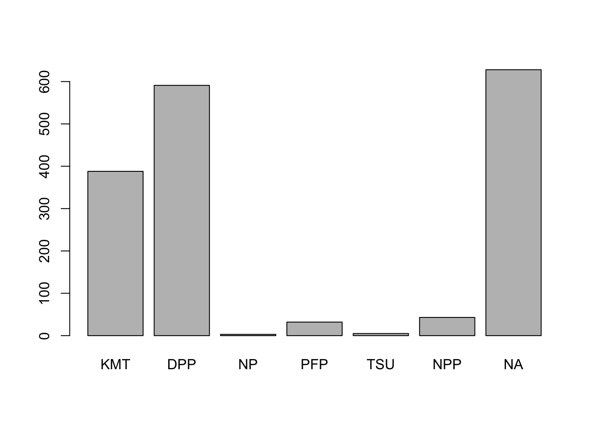
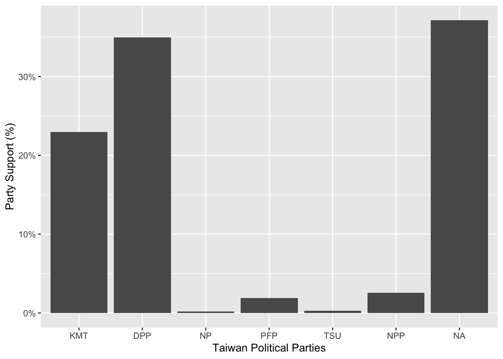
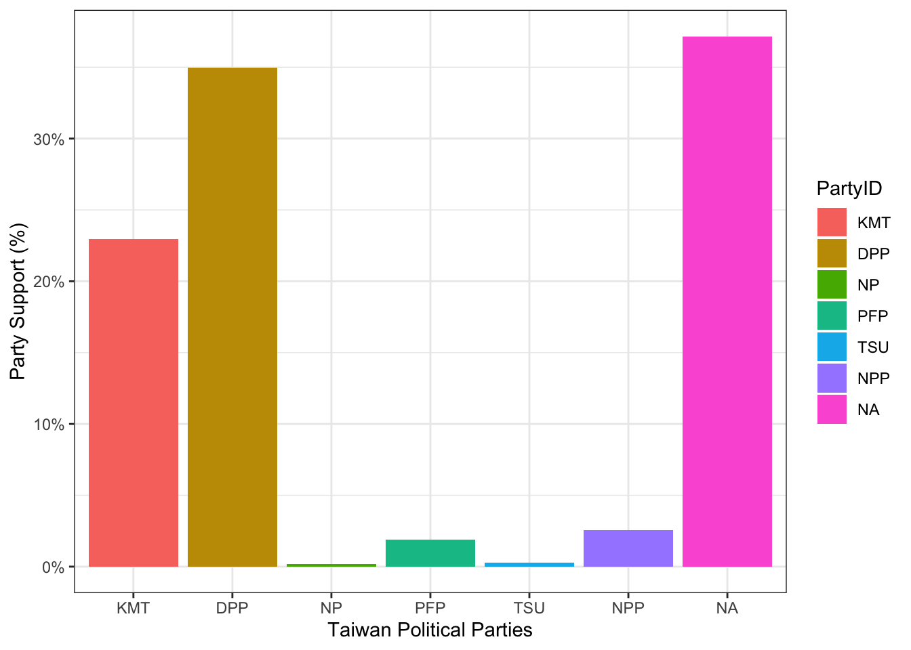
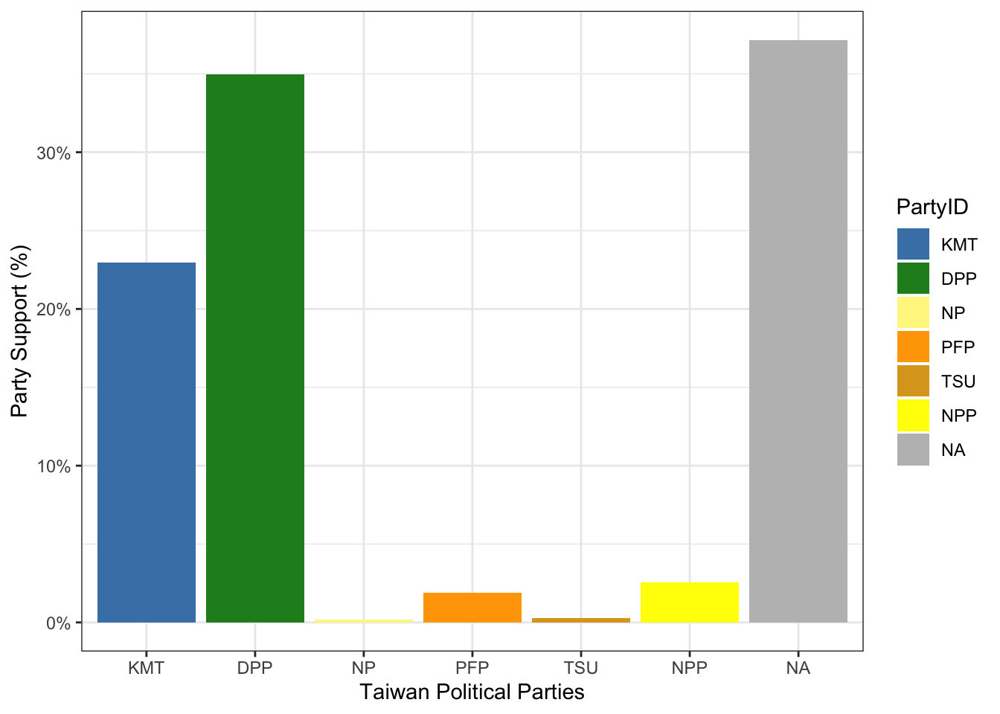
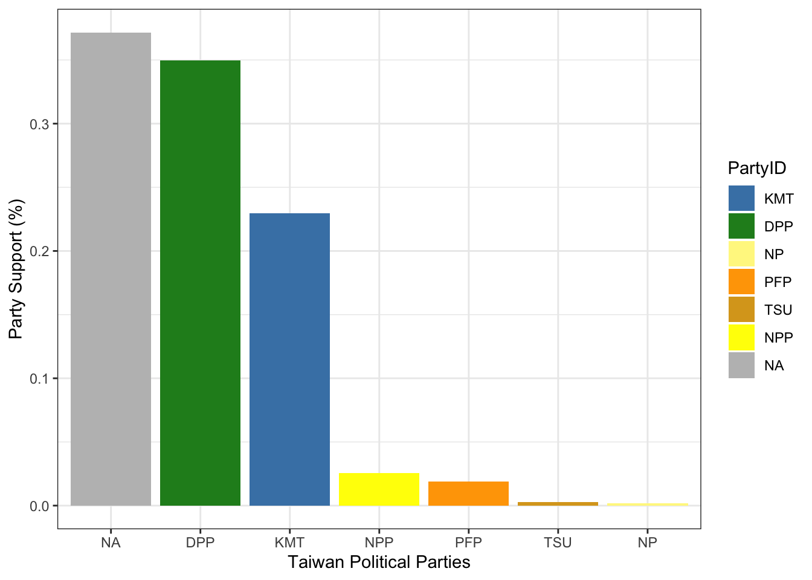
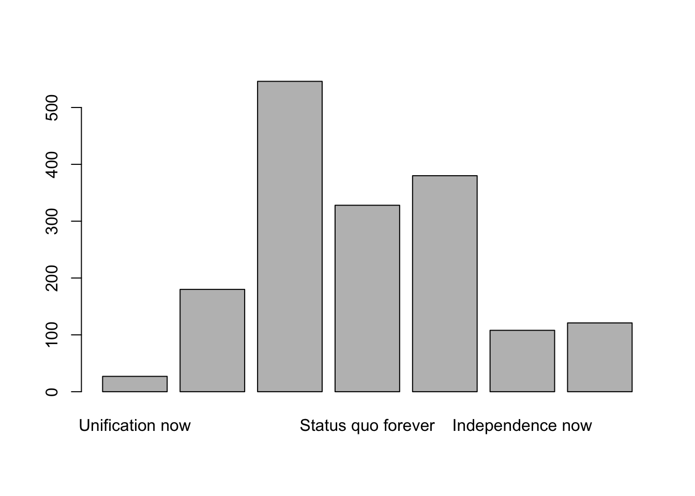
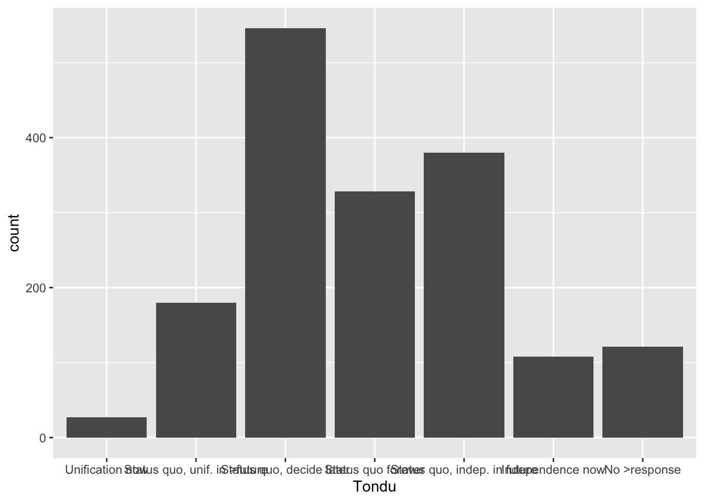
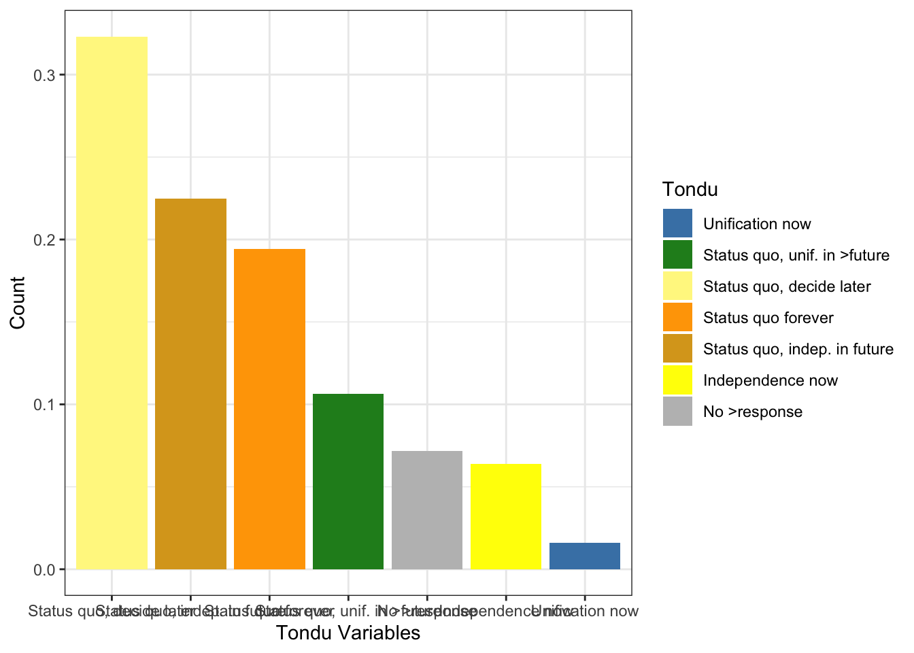

library(haven)
TEDS_2016 <-
read_stata("https://github.com/datageneration/home/blob/master/DataProgramming/data/TEDS_2016.dta?raw=true")
#TEDS_2016
TEDS_2016$PartyID <- factor(TEDS_2016$PartyID, labels=c("KMT","DPP","NP","PFP", "TSU", "NPP","NA"))
attach(TEDS_2016)
head(PartyID)[1] NA NA KMT NA NA DPP
Levels: KMT DPP NP PFP TSU NPP NAtail(PartyID)[1] NA NA DPP NA NA NA
Levels: KMT DPP NP PFP TSU NPP NAinstall.packages("descr", repos = "http://cran.us.r-project.org")
The downloaded binary packages are in
/var/folders/fg/l9nwkw5954b_7xv794xmt5_40000gn/T//Rtmpl0vOYA/downloaded_packageslibrary(descr)
freq(TEDS_2016$PartyID)TEDS_2016$PartyID
Frequency Percent
KMT 388 22.9586
DPP 591 34.9704
NP 3 0.1775
PFP 32 1.8935
TSU 5 0.2959
NPP 43 2.5444
NA 628 37.1598
Total 1690 100.0000# Plot the Party ID variable
library(ggplot2)
ggplot(TEDS_2016, aes(PartyID)) +
geom_bar()ggplot(TEDS_2016, aes(PartyID)) +
geom_bar(aes(y = (..count..)/sum(..count..))) +
scale_y_continuous(labels=scales::percent) +
ylab("Party Support (%)") +
xlab("Taiwan Political Parties")Warning: The dot-dot notation (`..count..`) was deprecated in ggplot2 3.4.0.
ℹ Please use `after_stat(count)` instead.
ggplot(TEDS_2016, aes(PartyID)) +
geom_bar(aes(y = (..count..)/sum(..count..),fill=PartyID)) +
scale_y_continuous(labels=scales::percent) +
ylab("Party Support (%)") +
xlab("Taiwan Political Parties") +
theme_bw()
ggplot(TEDS_2016, aes(PartyID)) +
geom_bar(aes(y = (..count..)/sum(..count..),fill=PartyID)) +
scale_y_continuous(labels=scales::percent) +
ylab("Party Support (%)") +
xlab("Taiwan Political Parties") +
theme_bw() +
scale_fill_manual(values=c("steel blue","forestgreen","khaki1","orange","goldenrod","yellow","grey"))
library(tidyverse)── Attaching core tidyverse packages ──────────────────────── tidyverse 2.0.0 ──
✔ dplyr 1.1.0 ✔ readr 2.1.4
✔ forcats 1.0.0 ✔ stringr 1.5.0
✔ lubridate 1.9.2 ✔ tibble 3.2.1
✔ purrr 1.0.1 ✔ tidyr 1.3.0
── Conflicts ────────────────────────────────────────── tidyverse_conflicts() ──
✖ dplyr::filter() masks stats::filter()
✖ dplyr::lag() masks stats::lag()
ℹ Use the conflicted package (<http://conflicted.r-lib.org/>) to force all conflicts to become errorsTEDS_2016 %>%
count(PartyID) %>%
mutate(perc = n / nrow(TEDS_2016)) -> T2
ggplot(T2, aes(x = reorder(PartyID, -perc),y = perc,fill=PartyID)) +
geom_bar(stat = "identity") +
ylab("Party Support (%)") +
xlab("Taiwan Political Parties") +
theme_bw() +
scale_fill_manual(values=c("steel blue","forestgreen","khaki1","orange","goldenrod","yellow","grey"))
TEDS_2016$Tondu<-factor(TEDS_2016$Tondu,labels=c("Unification now","Status quo, unif. in >future","Status quo, decide later","Status quo forever", "Status quo, indep. in future", "Independence now","No >response"))
library(descr)
freq(TEDS_2016$Tondu)
TEDS_2016$Tondu
Frequency Percent
Unification now 27 1.598
Status quo, unif. in >future 180 10.651
Status quo, decide later 546 32.308
Status quo forever 328 19.408
Status quo, indep. in future 380 22.485
Independence now 108 6.391
No >response 121 7.160
Total 1690 100.000library(ggplot2)
ggplot(TEDS_2016, aes(Tondu)) +
geom_bar()
ggplot(TEDS_2016, aes(Tondu)) +
geom_bar(aes(y = (..count..)/sum(..count..))) +
scale_y_continuous(labels=scales::percent) +
ylab("Count") +
xlab("Tondu")library(tidyverse)
TEDS_2016 %>%
count(Tondu) %>%
mutate(perc = n / nrow(TEDS_2016)) -> T2
ggplot(T2, aes(x = reorder(Tondu, -perc),y = perc,fill=Tondu)) +
geom_bar(stat = "identity") +
ylab("Count") +
xlab("Tondu Variables") +
theme_bw() +
scale_fill_manual(values=c("steel blue","forestgreen","khaki1","orange","goldenrod","yellow","grey"))